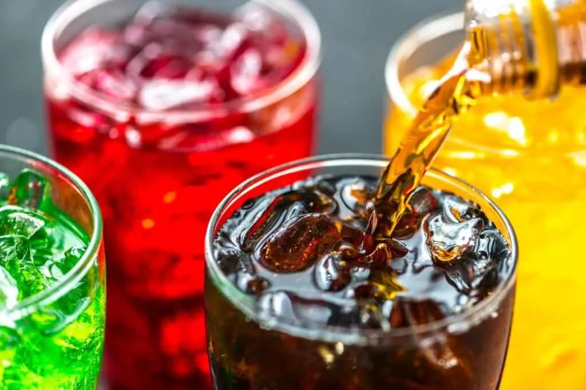

La industrialización de la alimentación, nos ha llevado a ser consumidores de alimentos procesados, los cuales han recibido una intervención que altera su composición original, asumiendo grandes cantidades de azúcares, sales, saborizantes, colorantes, conservantes, etc.
Algunos ejemplos son: productos enlatados, jugos embotellados, sopas instantáneas, leches saborizadas, galletas, mermeladas, mantequillas, cereales “saludables”, gaseosas, etc. Esta lista lamentablemente es consumida por muchos niños y niñas de nuestro país y el mundo.
Las bebidas y sus venenos: Estos líquidos con colores llamativos y un dulce sabor contienen cantidades asombrosas de venenos para nuestros niños/as.
¿Los conoces?
- Benzoato de sodio: Responsable del aumento de niveles de asma.
- Ácido fosfórico: Influyente en la aparición de cálculos renales.
- Azúcar: Daña esmalte dental y páncreas, responsable de la diabetes.
- Fructuosa: Conocida por sus impactos en enfermedades cardíacas.
- Bisfenil-a (Sustancia que contienen las latas): Responsable de complicaciones reproductivas.
- Fosfato: Favorece la Osteoporosis.
Pondremos el foco en los AZÚCARES y para ello, es necesario saber que existen dos tipos de azúcares:
Azúcares Libres: son los añadidos por la industria a determinados alimentos.
Azúcares Intrínsecos: presentes en los alimentos tales como frutas y verduras frescas, los cuales no han sido procesados. Su consumo no presenta problemas para nuestra salud.
El azúcar refinada está provocando obesidad, diabetes, aumento del colesterol, daños pancreáticos, caries dentales, ansiedad, insuficiencia renal y lo más grave una adicción profunda a esta droga disfrazada de amabilidad y placer.
El alto consumo de ella, además afecta el hipocampo, área cerebral que se responsabiliza de la habilidad llamada memoria y la capacidad de sostener la atención prolongada.
Es pertinente promover una EDUCACIÓN ALIMENTICIA VIVA, la cual tiene por objetivo consumir alimentos con energía, alimentos que nos entrega la naturaleza: semillas, granos, verduras, frutas. Cuánto menos manipulación tiene un alimento, más vivo estará y más saludable será.
Para esto necesitamos tomar conciencia de la responsabilidad de cuidarnos y cuidar a otros/as mediante lo que comemos. Todo lo que le damos a nuestro cuerpo y al de nuestros niños y niñas, revela el amor propio y como valoramos el vehículo que nos permite vivir esta experiencia terrenal.
Una alimentación consciente nos permite adquirir equilibrio en todos nuestros niveles, ya sea físico, mental y espiritual. El reeducarnos nutricionalmente es labor de todos para cuidar la manera de relacionarnos con nosotros mismos, con los otros y con el planeta.
¿Cómo disminuir el consumo de azúcar refinada en nuestros niños y niñas?
- Informarse y leer etiquetas de productos a consumir.
- Promover el agua como líquido habitual para nuestra hidratación.
- Tomar agua filtrada con trozos de frutas, tales como manzana, pera, rodajas de naranja, etc.
- Agregar al agua filtrada gotas de limón.
- Introducir la fruta como el mejor postre.
- En vez de los cereales endulzados por la mañana, sustituir por avena y/o frutos secos.
- Utilizar la canela, la vainilla, la miel y el anís como dulzor natural de nuestras preparaciones.
- Aumentar el consumo de alimentos ricos en fibra ( legumbres, frutas, cereales integrales y verdura cruda)
- Introducir frutos secos dentro de los hábitos alimenticios.
- Preparar queques, postres y leches endulzadas con dátiles, pasas o berries.
- No valorar los dulces como recompensas de ciertas conductas.
- Y por sobre todo conscientizar lo que le entregamos a los niños y niñas para alimentarse. La labor es nosotros, los adultos.
Peggysue.S.S